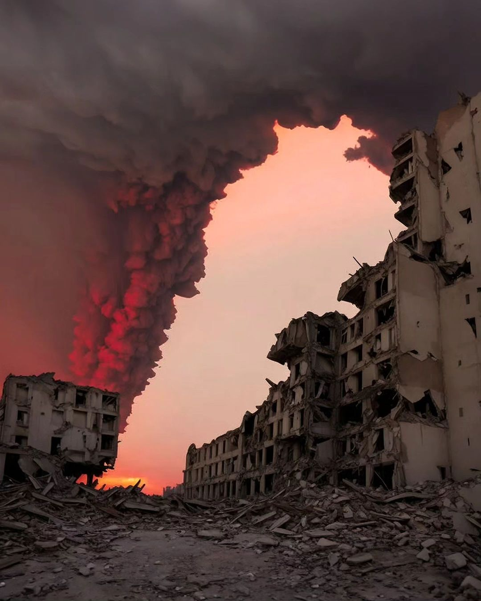

War Aftermath Gallery


War Aftermath Videos
Interactive Timeline of Events
Pager Explosion Incident
In this tragic event, Israel targeted pager communication infrastructure across Lebanon, aiming to disrupt Hezbollah’s communications. This act led to numerous injuries and fatalities among Lebanese civilians.